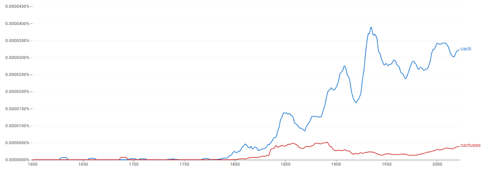
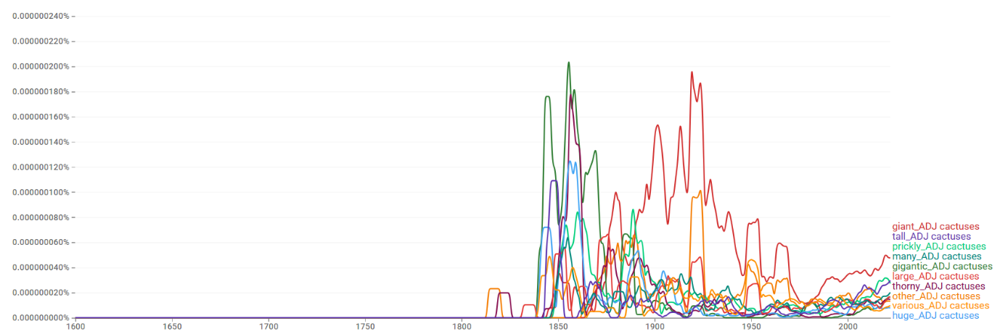
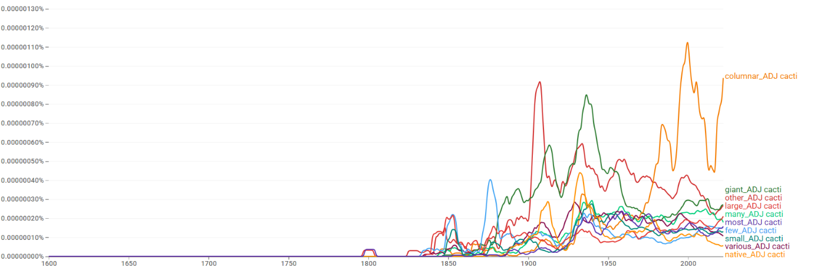
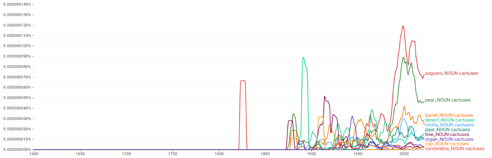
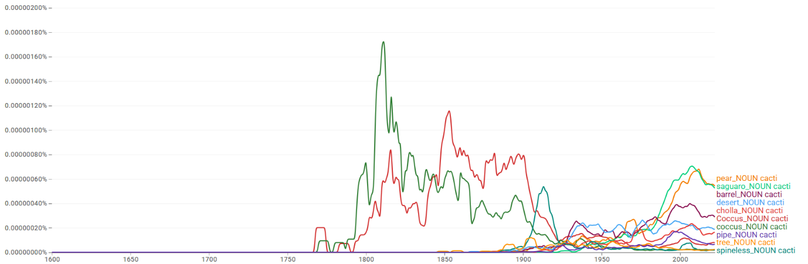
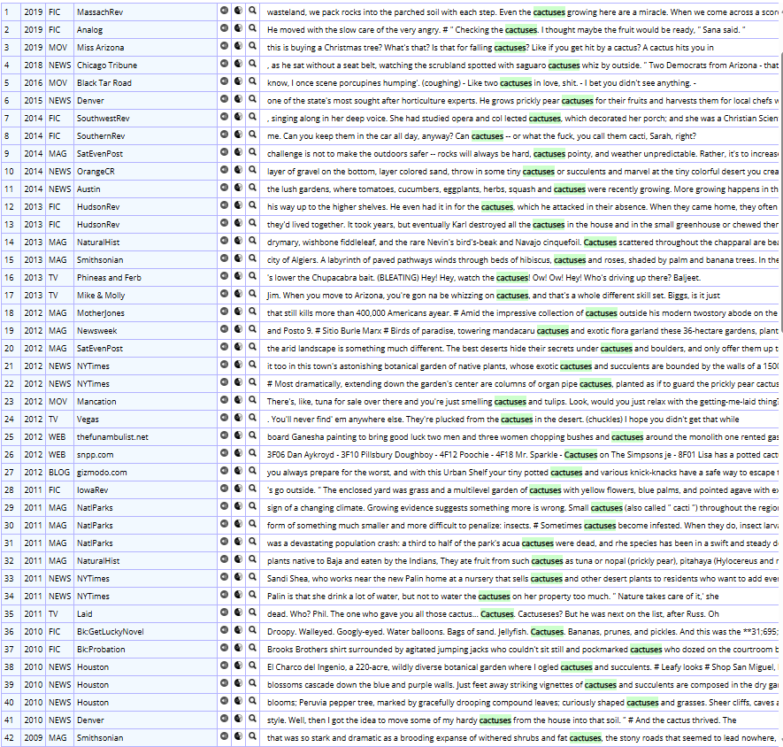
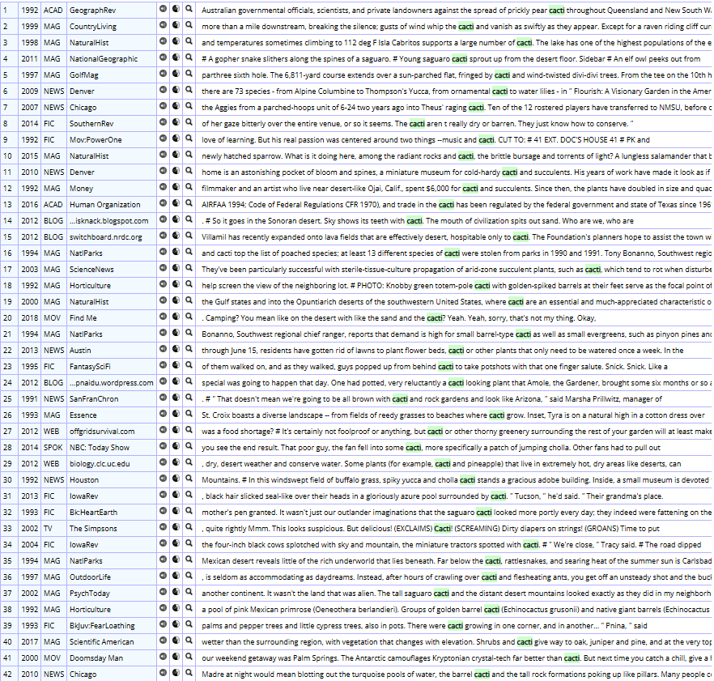

cacti/cactuses

결론
cacti와 cactuses는 ‘선인장’이라는 동일 의미를 공유하지만 비대칭을 보인다. 고전형 cacti가 전반적으로 우세를 유지하고 규칙형 cactuses는 제한적으로 잔존한다. cacti는 식물학적 종 분류·생태 서술·환경 보호·조경·원예 등 전문적·기술적 맥락에서, cactuses는 대중 매체·구어·개인 원예·관광/지역 정보 등 일상적 맥락에서 더 자주 나타난다. 다만 둘 사이의 뚜렷한 의미·register 분화는 발견하기 어렵고 규칙형이 제한적으로 존재하므로 고전형 우세 → 장기 고전형 우세 유지 → 경쟁의 구조다.
연구 결과
과정 및 결론 도달 과정 · 사용 도구
1차 Ngram 사용량 그래프로 고전형의 우위를, 2차 같은 그래프로 장기 고전형 우세 유지를 확인했다. 3차는 Ngram 연어(공통 연어가 다수, 근소한 차이)와 COCA 맥락 분석(자연생태·종 분류·법적 보호 vs 대중 매체·개인 원예·문학·관광)으로, 분명한 분화 없이 경쟁하는 양상을 해석했다.
세부 정보 · 구간 별 분절
초기에는 두 형태 모두 매우 낮지만, 19세기 후반 이후 고전형 cacti가 점차 증가하여 20세기 전반·중반에 걸쳐 높은 사용량을 유지한다. 규칙형 cactuses는 점진적으로 증가하나 전 시기에 걸쳐 cacti보다 훨씬 낮은 수준에 머문다. 현재 cacti가 뚜렷한 우위를 점한다.
이른 시기부터 cacti가 중심을 확보한 뒤 그 우위를 지속적으로 유지하고 cactuses가 주변적으로 잔존한 장기 고전형 우세 유지의 경로다.
두 형태 모두 giant, large, other 및 saguaro, pear, barrel, desert, cholla 등 공통 연어가 상위를 차지해 의미·분야 차이가 두드러지지 않는다. 다만 cacti는 coccus cacti, tree cacti 등 명칭 중심의 학술적 결합이 일부 보이고, cactuses는 외관 묘사·대중적/지역적 명칭에 가깝다. COCA에서도 cacti는 자연생태·종 분류·환경 보호·조경에, cactuses는 대중 매체·구어·개인 원예·문학·관광에 분포한다. 분명한 분화 없이 고전형이 중심을 유지하며 규칙형이 제한적으로 존재하는 경쟁 사례다.
cacti는 식물학이 라틴어 복수형을 학술 표준으로 고착시키면서 권위 있는 형태로 유지되었고, 규칙형 cactuses는 일상 화자들 사이에서 보다 직관적인 형태로 제한적으로 잔존한다. (식물학 표준화 1753 → 사막 식물 연구·보호의 제도화 1933·1975 → 학술·공식 용어로 유지)
참조 이미지 · 연어 그래프와 COCA 용례
이미지를 누르면 크게 볼 수 있어요.





